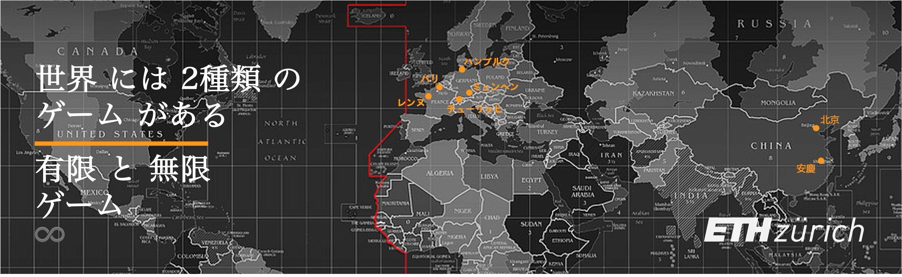
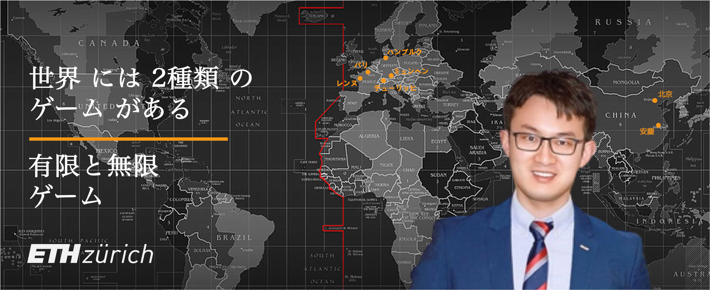

こんにちは！
こんにちは！

現在、徐泓 博士 (29歳) はドイツ・ミュンヘンの自動車産業で研究開発エンジニアとして働いている。 新エネルギー、持続可能な開発、機能性材料、コンピュータ画像・視覚、ビジネス・アナリティクスなど、横断的な研究を行っている。 学位取得期間中に、国内外の企業や学術機関と共同で10以上の筆頭著者および共著論文を発表し、3つの中国特許を取得しています。 アメリカ電気化学学会会議旅行賞、欧州エラスムス奨学金、学部イノベーション奨学金などを受賞している。 2021年チューリッヒ工科大学にてカーボンニュートラル技術に焦点を当てた研究で博士号を取得し、自動車用水素燃料電池の研究開発で2年間の産業界と4年間の学術界の共同プロジェクトに携わる。2016年、ミュンヘン工科大学で材料科学、レンヌ第一大学で物理学のEUデュアル修士号を取得し、ドイツ企業での産業実習とフランス研究所での研修を行う。16歳という若さで大学に進学し、2013年に3つの特許を取得して北京交通大学学士課程を修了。学術研究と並行して、クアンティックビジネススクールの非常勤経営学修士号（MBA）フェローとして、中国のベンチャーキャピタルや証券会社でインターンシップを行いながら、専門的な教育を展開した。
PEK (Nǐ Hǎo) -> CDG (Bonjour) -> HAM (Moin Moin) -> MUC (Servus) -> ZRH (Grüezi) -> ?
学歴
- 2017-2021 | 博士号、再生可能エネルギー (完全賞)
スイス · チューリッヒ工科大学
- 2014-2016 | 修士号、材料科学と物理学 (欧洲ダブルディグリー)
ドイツ · ミュンヘン工科大学
フランス · レンヌ第1大学
- 2009-2013 | 学士号、材料化学 (特許公開)
中国 · 北京交通大学
____
- 2020-2021 | 修士号、経営管理 (フルアワード)
米国 · クアンティックビジネススクール
研究関心
- 新エネルギー、ESG と持続可能性、カーボン ニュートラル、低炭素輸送
- 機能性材料、材料特性評価、ライフ サイクル アセスメント
- コンピューテッド イメージング、X 線技術、画像処理
- 株式調査、ビッグデータ分析、ビジネス分析
学術サービス
- 査読者:
- 電源ジャーナル (影響因子=9.13, 2022)
- 水素エネルギーの国際ジャーナル (影響因子=7.14, 2021)
- 持続可能な開発のためのエネルギー (影響因子=5.76, 2021)
- 教育助手:
- 再生可能エネルギー技術 II (マスター コース、チューリッヒ工科大学、2017-2019)
- 研究助手:
- 水素と燃料電池 (エネルギーと環境部、ポール シェル研究所、スイス、2016-2021)
- 高分子センサー (物理学部、ミュンヘン工科大学、ドイツ、2015-2016)
- 太陽電池とリチウム電池 (科学部、北京交通大学、中国、2012-2013)
- 組織:
- 招待論文/助成金受領者、米国電気化学会 (2019、米国)
- メンバー、国際電気化学会 (2019、イタリア)
- メンバー、ドイツ物理学会 (2016、ドイツ)
学術論文
-
H. Xu* [PSI], M. Bührer, F. Marone, Prof. T. J. Schmidt, F. N. Büchi, J. Eller
Effects of gas diffusion layer substrates on PEFC water management: Part II. In situ liquid water desaturation via evaporation [J]
2022 | J. Electrochem. Soc. [PDF][スイス光源] [EPFL] [新しい!] -
S. van Rooij, M. Magnini, A. Mularczyk, H. Xu* [PSI], F. N. Büchi [PSI], Prof. S. Haussener [EPFL]
Conductive heat transfer in partially saturated gas diffusion layers with evaporative cooling [J]
2022 | J. Electrochem. Soc. [PDF][スイス光源] [EPFL] -
H. Xu* [PSI], S. Nagashima [Toyota], H. Nguyen, K. Kishita, F. Marone, F. N. Büchi, J. Eller [PSI]
Temperature dependent water transport mechanism in PEFC gas diffusion layers revealed by subsecond operando X-ray tomographic microscopy. [J]
2021 | J. Power Sources [PDF][スイス光源] [豊田] -
M. Bührer, H. Xu* [PSI], A. Hendriksend, F. N. Büchi, J. Eller, Prof. M. Stampanoni [ETH], F. Marone [SLS]
Deep learning based classification of dynamic processes in time-resolved XTM [J]
2021 | Scientific Reports [PDF][スイス光源] [CWIアムステルダム] -
H. Xu* [PSI], M. Bührer, F. Marone, Prof. T. J. Schmidt [ETH], F. N. Büchi, J. Eller [PSI]
Effects of gas diffusion layer substrates on PEFC water management: Part I. Operando liquid water saturation and gas diffusion properties [J]
2021 | J. Electrochem. Soc. [PDF][スイス光源] -
M. Bührer, H. Xu* [PSI], J. Eller, Prof. J. Sijbers, Prof. M. Stampanoni [ETH], F. Marone [SLS]
Unveiling water dynamics in fuel cells from time-resolved tomographic microscopy data [J]
2021 | Scientific Reports [PDF][スイス光源] [アントワープ大学] -
C. Csoklich, H. Xu* [PSI], F. Marone, Prof. T. J. Schmidt [ETH], F. N. Büchi [PSI]
Laser Structured Gas Diffusion Layers for Improved Water Transport and Fuel Cell Performance [J]
2021 | ACS Appl. Energy Mater. [リンク][スイス光源] -
H. Xu* [PSI], M. Bührer, F. Marone, Prof. T. J. Schmidt [ETH], F. N. Büchi, J. Eller [ETH]
Optimal image denoising for operando XTM of liquid water in PEFC gas diffusion layers. [J]
2020 | J. Electrochem. Soc. [PDF][スイス光源] -
H. Xu* [PSI], F. Marone, S. Nagashima, H. Nguyen, K. Kishita, F. N. Büchi, J. Eller
(Invited) Exploring sub-second and sub-micron XTM imaging of liquid water in PEFC GDLs.[J]
2019 | ECS Transactions [PDF][スイス光源] [豊田] [ECS会議旅行特典] -
Y. Nagai [Toyota], J. Eller, T. Hatanaka, S. Yamaguchi, S. Kato, F. Marone, H. Xu* [PSI], F. N. Büchi.
Improving water management in fuel cells through microporous layer modifications: Fast operando tomographic imaging of liquid water. [J]
2019 | J. Power Sources [リンク][スイス光源] [豊田] -
H. Xu* [PSI], M. Bührer, F. Marone, Prof. T. J. Schmidt [ETH], F. N. Büchi, J. Eller [PSI]
Fighting the noise: towards the limits of subsecond X-ray tomographic microscopy of PEFC. [J]
2017 | ECS Transactions [リンク][スイス光源] [ModVal優秀展示賞] -
Prof. H. Zhang, R. Wu, H. Xu* [BJTU], F. Li, S. Wang, J. Wang [BJUT], T. Zhang
A simple spray reaction synthesis and characterization of hierarchically porous SnO2 microspheres for an enhanced dye sensitized solar cell. [J]
2017 | RSC Advances [リンク][BJTU] -
张辉 教授 [BJTU], 徐泓* [BJTU], 万金秀, 颜鲁婷 教授, 戴春爱
Preparations of new porous oxides spherical powders by spray reaction technique. [J]
2012 | 《真空与低温》 [リンク][BJTU] -
祁晓月, 徐泓* [BJTU], 周兴振
Degradation of highly active cypermethrin via ultrasonic irradiation combined with photocatalysis by TiO2
2012 | 《化学研究》 [リンク][BJTU]
各国特許
学位論文
-
徐泓 [ETH], T. J. Schmidt 教授 (Examiner/ETH), M. Stampanoni 教授 (Co-tutor/ETH), J. Eller 博士
Subsecond Operando X-ray Tomographic Microscopy of Liquid Water in Polymer Electrolyte Fuel Cells [D]
翻訳: 高分子電解質燃料電池における液体水のサブ秒オペランドX線トモグラフィ顕微鏡観察 [D]
博士論文. チューリッヒ工科大学、スイス、チューリッヒ、2021年. [PDF] -
徐泓 [TUM], P. Müller-Buschbaum 教授 (Examiner/TUM), W. Schmahl 教授 (Co-tutor/LMU), E. Metwalli 博士
Structure & Properties of Thermoresponsive DBC Embedded with Metal Oxide Nanoparticles. [D]
翻訳: 金属酸化物ナノ粒子を内包した熱応答性ジブロックコポリマーの構造と性質 [D]
修士論文.ミュンヘン大学およびミュンヘン工科大学、ミュンヘン、ドイツ、2016年. [PDF] -
徐泓 [BJTU], 张辉 教授 (Examiner/BJTU)
Application of Mesoporous SnO2 Materials in Dye-sensitized Solar Cells and Lithium Batteries. [D]
翻訳: 色素増感太陽電池およびリチウム電池におけるメソポーラス二酸化スズ材料の応用 [D]
学部論文. 北京交通大学. 北京、中国、2013年. [PDF]
コースアシスタント
-
《再生可能エネルギー技術 II - エネルギー貯蔵とエネルギー変換》
チューリッヒ工科大学, 修士課程 (529-0191-01L)
2017-2019 | 春学期 [コースリンク]
学術会議
-
H. Xu [PSI], M. Bührer, F. Marone, T. J. Schmidt, F. N. Büchi, J. Eller
Influence of Pore Size Distribution on Operando GDL Liquid Saturation.
第236回電気化学会 (ECS)、アトランタ、米国、 2019年 [スピーチ] [リンク] -
H. Xu [PSI], M. Bührer, F. Marone, T. J. Schmidt, F N. Büchi, J. Eller
Advancements in 10Hz operando X-ray Tomographic Imaging of Water in GDLs of PEFC.
第8回燃料電池の基礎研究開発に関する国際会議 (FDFC)、フランス、ナント、2018年 [スピーチ] [リンク] -
H. Xu [PSI], M. Bührer, F. Marone, T. J. Schmidt, F N. Büchi, J. Eller
Studies of Water Distribution in the Gas Diffusion Layer of PEFCs using X-ray Tomographic Microscopy
第69回国際電気化学会年次総会 (ISE)、ボローニャ、イタリア、2018年 [ポスター] [リンク] -
H. Xu [PSI], M. Bührer, F. Marone, T. J. Schmidt, F N. Büchi, J. Eller
Water Distribution in the Gas Diffusion Layer of PEFCs: X-ray Tomographic Microscopy Studies
第15回燃料電池モデリングシンポジウム (ModVal)、アーラウ、スイス、2018年 [優秀展示賞] [リンク] -
H. Xu [PSI], M. Bührer, F. Marone, T. J. Schmidt, F. N. Büchi, J. Eller
Quantification of Feature Detectability for Subsecond X-ray Tomographic Microscopy of PEFC.
第6回欧州有機膜燃料電池・電解槽フォーラム (EFCF)、ルツェルン、スイス、 2017年 [スピーチ][リンク] -
H. Xu [PSI], M. Bührer, F. Marone, T. J. Schmidt, F. N. Büchi, J. Eller
Contrast-to-Noise Ratio Evaluation for X-ray Computed Tomographic Imaging of Water in Polymer Electrolyte Fuel Cells
第14回燃料電池モデリングシンポジウム (ModVal)、カールスルーエ、ドイツ、2017年 [ポスター][リンク] -
H. Xu [TUM], E. Metwalli, P. Müller-Buschbaum
Nanoparticles Embeded Thermoresponsive Diblock Copolymers for Magnetic Sensor Application.
2016 EU Erasmus MaMaSELF プロジェクト年次総会、リギ山、スイス、2016年 [スピーチ] [リンク] -
H. Xu [TUM], E. Metwalli, P. Müller-Buschbaum
Magnetic properties and structure of thermoresponsive polystyrene-block-poly(N-isopropylacrylamide)/iron oxide nanocomposite thin films.
第80回ドイツ物理学会年次総会 (DPG)、レーゲンスブルク、ドイツ、2016年 [ポスター] [リンク] -
H. Xu [BJTU], Prof. H. Zhang, R. Wu
Mesoporous SnO2 Microspheres: Synthesis, Characterization, and Application in Enhanced Dye-sensitized Solar Cells and Lithium Batteries.
2013年清華大学エネルギー粒子シンポジウム、北京、中国、2013年 [ポスター] [リンク]
スピーチとモデレーター
-
2022 | IN3 キャピタル サロン 招待ゲスト: 「水素」に重きを置く「水素エネルギー」の魅力 (セッション 8、100 人以上のオンライン参加者)
-
2022 | 奇績創壇 内部共有: カーボン ニュートラルのビジョンの下での新しいエネルギーの機会と課題 - 技術の最前線、政策と投資の機会 (50 以上のオンライン参加)
-
2022 | 博士變形計 コラムのモデレーター: 集積回路/チップ/半導体/フロンティア - 国内外の博士課程学生のためのオンライン円卓会議 (100 人以上のオンライン参加者)
-
2021 | クラブハウス モデレーター: Ph.D. エネルギー危機下でのビジョン—新しいエネルギー政策/技術 (光/風/リチウム/水素/原子力) に焦点を当てる (200 人以上のメンバー)
文案寫作
-
2023 | 留歐十年 ⋅ 博士變形計: 回顧録：元博士生: ヨーロッパでの 10 年間 (書き込み)
-
2022 | 匯銀資本 (公開転載): 新エネルギー太極図：リチウム電池vs水素エネルギー、カーボンニュートラルの王冠を勝ち取れるのはどっち
-
2022 | 知乎の円卓 (世界新エネルギー車大会)：新エネルギーの 3 つの主要な流派: バッテリー交換、充電、水素燃料、どれが将来になるでしょうか?
-
2022 | 博士變形計 (公開原刊)：ロシア・ウクライナ紛争：欧州エネルギー安全保障の底流と危機、中国と米国の影響
受賞
-
2019 | アメリカ電気化学会会議旅行賞 [証明]
海軍研究局による資金提供、ワシントン D.C.、米国 [USD 1'500] -
2018 | 最優秀ポスター賞 [証明書]
ModVal会議委員会、スイス、アーラウ [CHF 300] -
2015 | EU エラスムス奨学金
EU教育・視聴覚・文化行政機関、フランス [2'650 EUR] -
2012 | TECOテクノロジーファイナリスト賞 [証明書リンク>]
台北 TECO テクノロジー財団、台北、中国 [NTD 50'000] -
2012 | 全国銅賞 [証明書 ]
第8回チャレンジカップ ビジネスプラン大会、中国北京の教育省が授与 [RMB 5'000] -
2012 | イノベーション奨学金
北京交通大学、北京、中国 [RMB 2'500] -
2010 | 3年連続の研究に対する奨学金
北京交通大学、北京、中国 [RMB 2'400]
技能訓練
-
2020 | 機械学習アプリケーション
スイス連邦工科大学ローザンヌ校、ローザンヌ、スイス。 -
2020 | 産業用 CT アプリケーション
オーストリア応用科学大学、ウェールズ、オーストリア。 -
2019 | データ サイエンスの IBM プロフェッショナル認定資格
IBM Inc. & Coursera、米国。[証明書] -
2019 | 機械学習とイメージング
ベルン大学、ベルン、スイス。 -
2019 | ノバルティス データ サイエンス ハッカソン
ノバルティス・リーダーシップ・フォーラム、ルツェルン、スイス。 -
2019 | ニューラル ネットワークとディープ ラーニング
deeplearning.ai & Coursera、米国。[証明書] -
2017 | バイオメディカル イメージング サマー スクール
チューリッヒ大学病院 (USZ)、スイス、チューリッヒ。 -
2016 | 応用物理サマースクール
ミュンヘン工科大学、ミュンヘン、ドイツ。 -
2015 | X 線および中性子散乱サマースクール
モンペリエ大学、モンペリエ、フランス。
訪問
- シンクロトロン放射光加速器: フランス SOLEIL シンクロトロン放射光加速器 (パリ、2015 年)、ドイツ電子加速器 (ハンブルグ、2016 年)、EU 自由電子レーザー (ハンブルグ、2016 年)、イタリア エレットラ シンクロトロン (トリエステ) 、2016)、スイス光源 (Villigen、2017)
- 原子力発電所: サクレー原子力研究センター、フランス (パリ、2015 年)、ハインツ ライプニッツ中性子源研究所 (ミュンヘン、2016 年)、ベツナウ原子力発電所、スイス (アールガウ州、2018 年) )
- 政府/国際機関: 国連本部 (ニューヨーク、2019 年)、フランスのセーヌ・ノルマンディー水道局 (パリ、2016 年)、蘇州市都市計画局 (江蘇省、2016 年)、郑州環境保護局局 (河南省、2014 年)、開封環境保護局 (河南省、2014 年)
その他の技能
-
英語 (高級、C1)、中国語 (母語、C2)、ドイツ語 (中級、A2-B1)、フランス語 (初級、A2)
-
写真サイト、執筆、ビデオ編集、ハイキング、サイクリング (チューリッヒ湖周辺)、旅行 (30 カ国以上)、表テニス、中華、西洋料理
旅行
- アジア: 中国本土 (13 以上の省/都市)、台湾、ロシア、トルコ、タイ
- ヨーロッパ: オーストリア、ベルギー、ボスニア・ヘルツェゴビナ、クロアチア、 チェコ共和国、デンマーク、エストニア、フランス (5 以上の都市)、フィンランド、ドイツ (25 以上の都市)、ハンガリー、アイスランド、イタリア、リヒテンシュタイン、ルクセンブルグ、オランダ、ノルウェー、ポーランド、セルビア、スロベニア、スペイン、スウェーデン、スイス (30 以上の都市)
- 北米: カナダ、アメリカ合衆国
- アフリカ: グラン カナリア島 (スペイン)